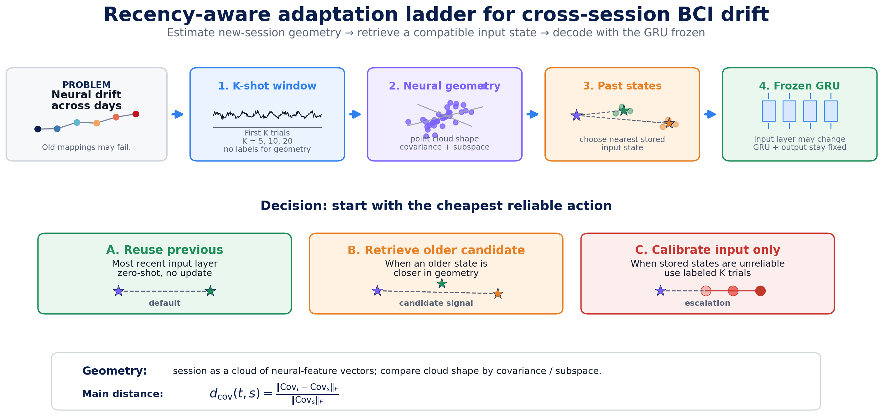
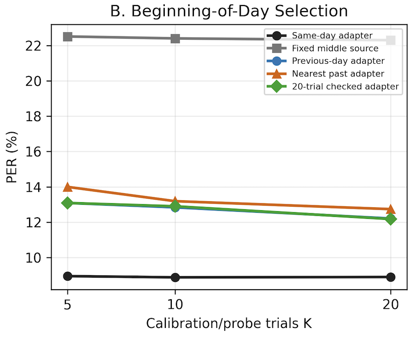
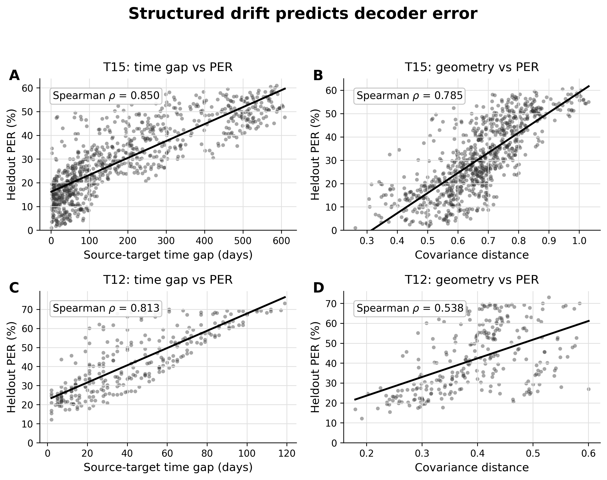

No labels, no gradient updates, no GRU/head changes.
TL;DR
Daily BCI calibration should not be automatic.
The decoder can stay frozen, but the input state must be chosen carefully. Before asking the user for new labeled calibration data, a system can first reuse a recent compatible state or retrieve a candidate from history using unlabeled neural geometry.
Most avoidable error is removed before requesting labels.
Labels help, but state choice helps more in this setting.
Rapid calibration still has real user-time cost.
Reframing the daily problem
Not “train every day”; first ask which historical input state fits today.
We do not propose a new speech decoder. We study how to maintain an existing brain-to-text decoder: the official T15 day-conditioned GRU. The GRU backbone and phoneme head remain frozen. The operational question becomes how today’s neural features should enter the decoder.
Input state
The input state is the day-specific input layer / adapter. It maps neural features into the representation expected by the frozen GRU.
Method
Figure 1. Recency-aware adaptation ladder for cross-session BCI drift

A short beginning-of-day neural window estimates target geometry. DriftGate chooses the cheapest reliable action: reuse previous, retrieve an older compatible candidate, or calibrate input only, while keeping the GRU backbone and phoneme head frozen.
Results
The wrong input state breaks the frozen decoder.
Native vs wrong input state
Native-day decoding reaches 9.06% PER. Fixed non-native input states raise PER to 22.67-34.43%, showing that the interface into the frozen decoder matters.
Yesterday is a strong zero-label default
In the beginning-of-day setting, previous-state reuse reaches 13.09%, 12.84%, and 12.21% at K=5, 10, and 20. Geometry retrieval remains close at 12.74% for K=20.

Geometry
Structured drift predicts decoder error.
Each session can be viewed as a cloud of neural-feature vectors. Covariance summarizes the population-activity cloud. The drift geometry is structured: source-target time gap and covariance distance correlate with heldout PER.

Guardrails
Geometry is a risk sensor, not an autopilot.
Geometry can nominate plausible older states, but covariance distance alone is not reliable enough to silently override recency. It should warn, triage, and retrieve candidates; a confidence gate should decide whether an older state is trustworthy.
Replication
T12 replication: state choice matters again.
Using a public Brain-to-Text Benchmark 2024 checkpoint, fixed old reuse is highly degraded. Previous-day reuse recovers much of the loss without introducing a new adaptation mechanism.
Presentation
Five-minute narrated explainer
A web-ready narrated video for the project site. The deck keeps the official T15 GRU framing: the decoder stays frozen, while DriftGate manages the input state through reuse, geometry retrieval, and input-only calibration when evidence demands it.
Open the short speaker script
Opening question. Do we really need to recalibrate or retrain a brain-to-text decoder every day?
Main answer. The decoder can stay frozen, but the input state for the current day must be chosen carefully.
Method. Start with the cheapest reliable action: reuse the previous input state, retrieve an older candidate using unlabeled neural geometry, and calibrate the input layer only if stored states appear unreliable.
Result. Previous-state reuse reaches 12.21% PER at K=20 with no labels, no gradient updates, and no changes to the frozen GRU backbone or phoneme head.
Takeaway. Cross-session drift can be framed as input-state management: reuse when memory is reliable, retrieve when geometry warns, and recalibrate only when evidence demands it.
Resources
{kind=link}